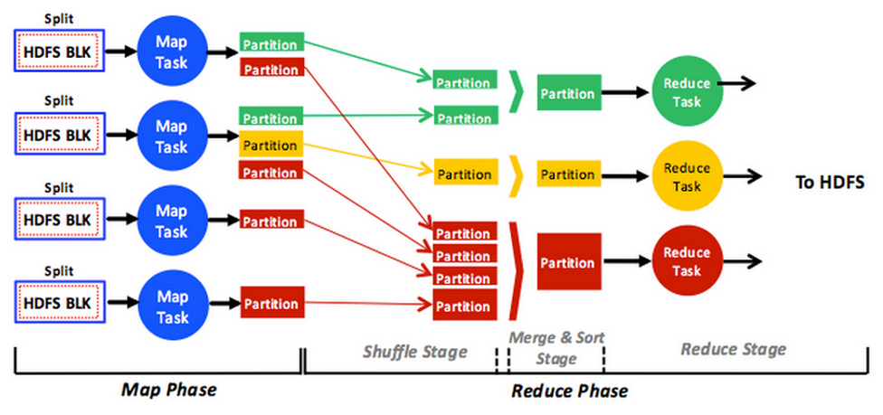
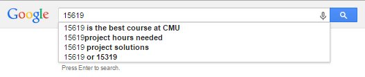
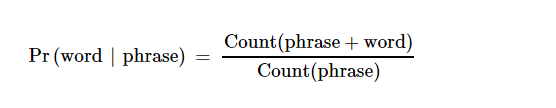
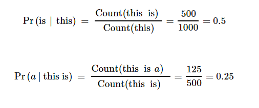

Input Text Predictor using MapReduce
Learning Objectives
This project will encompass the following learning objectives:
- Learn distributed programming using the MapReduce paradigm.
- Run jobs that run on the YARN framework and write to HBase.
- Build an input text predictor that feeds from an HBase table.
Resource Tagging And Budgets
Tag all of your instances with Key: Project and Value: 4.1 for all resources
You have a budget $15 for all the tasks in Project 4.1.
At Carnegie Records you realized that the music industry is no longer profitable, since it is too easy to find illegal copies of music online. You come to the realization that true power is held by those who control the flow of information and data.
You decide to join Mellonitics, a corporation for search and data analytics. Of course, there are some small companies that currently dominate the web search market, so you need to build an engine that is faster and provides more accurate results than the incumbents.
The first stage is to build a simple engine that can predict what people want to search for. Studies have shown that millennials are too lazy to type in the entire search term in the search box.
This week, you will build a search query Input Text Predictor simple Hadoop programs.
The MapReduce Programming Paradigm
This project module is complemented by Unit 5: "Programming Models" on OLI.
The MapReduce programming model, pioneered by Google, is designed to process big data using a large number of commodity machines. In a MapReduce program, data, stored as Key/Value pairs, is processed by a Map function. Mappers output a transformed set of Key/Value pairs, which are subsequently processed by a Reduce function (see Figure 1 Below:).
Figure 1: MapReduce Overview
MapReduce is a proprietary framework designed to run in Google's large server farms and data centers. Hadoop is an open-source implementation of MapReduce.
The Hadoop framework runs atop HDFS. HDFS mimics the Google File System (GFS) and partitions input datasets into fixed-size chunks (blocks), distributing them on participating cluster nodes. By default 128MB, each HDFS block can be configured differently by users. Jobs can subsequently process HDFS blocks in parallel at distributed machines, thus exploiting the parallelism enabled by partitioning datasets. MapReduce breaks jobs into multiple tasks denoted as map and reduce tasks. All map tasks are encapsulated in what is known as the map phase, and reduce tasks are encompassed in what is called the reduce phase. The map phase can have one or many map tasks, and the reduce phase can have zero or many reduce tasks. When a MapReduce job includes no reduce tasks, it is referred to as "reduce-less."
Map and reduce tasks consume different data, operating independently and in parallel only in their respective phases. That is, tasks in the same phase never communicate (send or receive messages)
The InputFormat defines how to read data from a file into the Mapper tasks. Hadoop comes with several implementations of InputFormat; some of them work with text files and describe different ways in which the text files can be interpreted. The Map function will process these values and write an output value of a particular Writable type. The only communication in MapReduce occurs implicitly between different tasks in different phases. Specifically, map tasks generate new partitions in the map phase, and the Hadoop engine itself transfers partitions (over the network) to the reduce tasks in the reduce phase/ The results emitted from each mapper are sorted by key, and partitioned into one of the reducers. This is done when each mapper task completes to avoid an overload of traffic at the end of the final mapper's operation. The intermediate data is passed to a waiting reducer task, and also written to the local disk.
Map(k1,v1) --> list(k2,v2)
The next steps are the Shuffle then Merge and Sort, which are performed automatically by the MapReduce framework. This is done using a Partition function, which when given a key, returns the ID of the target reducer. For e.g. you may choose the default HashPartitioner, where the key is hashed into a modulo-n integer (where n is the number of reducers). The goal of this phase is to send all KV pairs with the same key to the same reducer.
The Reduce function is called once for each unique key output from the mapper. The Reducer has an iterator for all values for each key. This may be used to aggregate results, and finally returns another an output in the desired OutputFormat which is written to a destination by a specific Output Writer.
Reduce(k2, list (v2)) --> list(v3)
Getting Started
In this project, you will be writing MapReduce programs to perform data analytics in order to build a text predictor. The first part of this project involves getting familiarized with MapReduce programming in the native Java framework. Please read the entire project write-up carefully before provisioning any resources. You will be required to write Java code in order to complete this project.
Before we discuss the task to be completed, we will first go through a few example programs in Hadoop. The following cluster configuration will be used.
Launch a 5-node cluster (1 Master + 4 Core) (m1.large/m1.xlarge) using Amazon EMR, following the instructions outlined in Project 1. You should use spot pricing as long as the savings are significant compared to on-demand pricing. Choose the 3.6.0 AMI version (which runs Hadoop 2.4.0). Remember to provide an EC2 keypair so that you can SSH into the instances once the cluster is provisioned.
Once provisioned, login to the Master node of your cluster. The EMR console should tell you the DNS name of the master instance. If you have trouble connecting, make sure the security group associated with the master instance has SSH (Port 22) open to all IPs. Remember that EMR clusters use a special AMI which allows you to log in as the hadoop user.
List the entries in the home directory of the hadoop user, you should find multiple jar files, including hadoop-examples.jar.
Run hadoop jar hadoop-examples.jar to see a list of sample programs that are available with Hadoop.
Run the sample pi application (using 8 maps and 10,000 samples per map) to ensure that your Hadoop cluster is working correctly.
You can keep the cluster running to try more example programs. You should use this cluster configuration for all activities related to this project checkpoint
MapReduce Word Count Example
In this example, we will compile and run a Word Count program to process text files and report the number of times each word appears in the input files.
For help with the various hadoop command line syntaxes, we refer you to the MapReduce Tutorial and HDFS Command Guide.
The following video will cover the classical Word Count Java example for Hadoop:
Video 1: Word Count using MapReduce : Code Walkthrough
Note: In the video, we have compiled the Word Count example in Eclipse to run on the cluster. Newer versions of Eclipse and/or the JDK may use JRE 1.8, which is not compatible with JRE 1.7 that is typically found on EMR clusters. Please compile the code using the correct JRE, or compile the program on the cluster as described below.
Code Walkthrough:
The code for Word Count on Hadoop is best explained in the Apache Hadoop tutorialPlease read the tutorial carefully, and create WordCount.java using first the simple, and then later the more complex example.
Running the WordCount Hadoop Program on EMR
Follow this video:
Video 2: Word Count using MapReduce : Running the program
Note: Some students report issues when loading data into HBase using the runnable JAR exported from Eclipse. It makes more sense to use the approach below to compile.
Login to the master instance of your hadoop cluster to author the WordCount.java file.
Compile your code and package it as a jar using the following commands:
cd ~ mkdir wordcount_classes cp ~/share/hadoop/common/hadoop-common-2.4.0-amzn-3.jar . cp ~/share/hadoop/mapreduce/hadoop-mapreduce-client-core-2.4.0-amzn-3.jar . cp ~/share/hadoop/mapreduce/hadoop-mapreduce-client-common-2.4.0-amzn-3.jar . javac -classpath hadoop-common-2.4.0-amzn-3.jar:hadoop-mapreduce-client-core-2.4.0-amzn-3.jar:hadoop-mapreduce-client-common-2.4.0-amzn-3.jar -d wordcount_classes WordCount.java jar -cvf wordcount.jar -C wordcount_classes/ .
Please note the trailing . at the end of the jar command. If you have trouble finding the jar command in your instance, a version may be located in /usr/lib/jvm/*/bin OR /usr/java/latest/bin/jar
To prepare the input, you can either create a simple text file and upload it to HDFS using the command hadoop dfs -put , or for a much larger dataset, you can run RandomTextWriter in the hadoop examples jar file with the parameter /wordcount/input to generate the input data. This uses the configuration to generate about 40 GB of data, (10 GB of data per node), which can take a while to complete. Once the program has finished, use the HDFS commands to check the contents of /wordcount/input
Run your MapReduce jar file (wordcount.jar) over /wordcount/input. Use /wordcount/output as the destination for your output files.
Once the program has completed execution, you can use the hadoop dfs commands to inspect and copy the output of your program.
Input Text Prediction
Input text prediction helps speed up search by "autosuggesting" the next word(s) that the user is more likely to search for. This is often used as a component for incremental search, by providing real-time suggestions for users to progressively filter through text. As the user types text, one or more possible matches for the text are found and immediately presented to the user. This immediate feedback often allows the user to stop short of typing the entire word or phrase they were looking for. The user may also choose a closely related option from the presented list.
Predictors are often frequency-based and are known to be influenced by frequent searching (example Google bombs).
A basic input predictor works using a language model that predicts the probability of a future word occuring given that a string has already been typed. It then recommends the most likely words in order from that list. You will learn to build this in three steps.
Figure 2: The Input Text Predictor at one of our rivals (please note that it is highly accurate)
Building an Input Text Predictor
For this project, you will build your own input text predictor, similar to Google Instant. You will build this input text predictor using a text corpus.
The steps involved in building this input text predictor are:
- Given a text corpus, generate a list of n-grams, which is simply a list of phrases in a text corpus with their corresponding counts.
- Generate a statistical language model using the n-grams. The statistical language model contains the probability of a word appearing after a phrase.
- Create a user interface for the input text predictor, so that when a word or phrase is typed, the next word can be predicted and displayed to the user using the statistical language model.
You will start the project by generating n-grams from a text corpus for this module.
Step 1
In the first part of the project, you will work with a plain-text corpus of 6000 books from Project Gutenberg and generate a list of n-grams from it.
An n-gram is phrase with n-words in it. For example a 1-gram is a single word such as "this" or "where", and 2-grams are phrases with two words, such as "this is" or "where is".
This text corpus has been processed and stored in the following S3 location:
s3://15-319-s13/book-dataset/
Process the entire text corpus using a MapReduce job to output every phrase in the corpus, along with the number of times the phrase appeared. These n-grams must be in the following plain-text format:
<phrase><\t><count>
For Example:
this 1000 this is 500 this is a 250
Once you have your ngrams, select the top 100 ngrams (ordered by count, break ties alphabetically) and store them in a file. You will use this file of 100 ngrams for grading later. We strongly recommend using Hive which you were introduced to in Project 3 to get this data using a SQL-like syntax, though you are free to use any method you see fit. Another interesting approach will be to write a custom Partitioner and use it to perform Distributed Sort.
Please note the following instructions/assumptions:
- You must generate 1-gram, 2-gram, 3-gram, 4-gram, 5-gram outputs in the same MapReduce job.
- You need to generate raw n-grams and not worry about punctuation or phrase semantics.
- You MUST process each line independently. You do not need to consider n-grams and phrases that span multiple lines in the text corpus.
- You must limit the words in the phrase to be purely alphabetical [A-Za-z] and replace all punctuation, numbers and all non-alphabetical characters can be replaced with a space, generating additional words in the line.
- Convert all words to lower-case.
- Do not consider n-grams and phrases that span multiple lines in the text corpus.
- Treat underscore '_' as a non-word character.
- Run your MapReduce job on a cluster provisioned using Amazon EMR.
- Use spot instances.
- Do not exceed more than $1.5 per hour for your EMR cluster (consider all relevant costs in this calculation -- leave a buffer for network and disk I/O)
- If you need to take a break before Step 2, transfer the output of your program to an S3 bucket for the next part of the project. You can do this by using s3cmd or by directly writing to S3 from your MapReduce program.
- Consider using
hadoop distcpif you ever need transfer files between S3 and HDFS. - If your instance is small, or you have no extra EBS provisioned, you will find yourself running out of space if you try to copy the entire output to local disk, so we suggest copying the data out to ephemeral storage in /mnt, or copying small parts of your output for inspection.
- Do not output any empty characters "" or double spaces " " between words.
- Treat apostrophe as punctuation - so the word don't would generate the ngrams don ; don t ; t ;
- We recommend that you code and test and debug your program on a small file first before attempting to generate the n-grams for an entire text corpus.
Tasks to complete
- Launch an EMR cluster (with Hive/HBase installed) to run your MapReduce job for step 1 as explained in the video.
- Get the top 100 ngrams and store them in a file called "ngrams".
- SSH into the master of your EMR cluster and download the submitter file from here:
cd ~ wget https://s3.amazonaws.com/15-319-s15/submitter chmod +x submitter
- Copy your "ngrams" file into the same folder as the submitter and run the following command:
./submitter -n
- This will grade the accuracy of your ngrams and update your score.
Step 2
We will now compute a statistical language model using the n-gram counts and store them in an efficient manner so that they can be accessed easily from a web interface.
A statistical language model is a collection of probabilities of words appearing after a phrase. Using the n-gram counts as input, the probability of a word appearing after a phrase can be expressed in simple terms as:
As an example, consider the following input:
this 1000 this is 500 this is a 125 this is a blue 60 this is a blue house 20
The following probabilities can be calculated:
Your task is to generate the statistical language model for all words and phrases appearing in the n-gram counts generated from a text corpus. You must complete this task using a MapReduce job that reads the input file from HDFS and writes the output file to HBase. Specifically, you must:
- Develop a schema in HBase to store the words appearing after phrases and their probabilities. You must also account for how the data is likely to be accessed from the user interface. Users will type a phrase and will expect to see an ordered list of the next word that the user is “most” likely to type.
- Write a Mapreduce program to read the n-gram counts generated from the previous checkpoint, and process them to generate the probabilities as outlined above. The output from the MapReduce program should be written directly to an HBase table, following the schema that you have designed.
Hints, Assumptions, and References:
- You can launch a cluster that has both HBase and Hadoop automatically using EMR.
- You will want to ignore phrases that appear below or equal to a certain threshold, say t, from your n-gram count for your statistical language model to be accurate. Use t = 2.
- For a given phrase, store only the top n words with the highest probabilities. This value should also be a command-line parameter to your MapReduce application. If two words have the same probability, choose the one which is lexicographically higher i.e. 'ab' comes before 'bc'. Use n = 5.
- Use GenericOptionsParser class, along with apache.commons.cli packages to parse command line options.
- Use no more than 5 instances to complete the MapReduce job. Use spot pricing for all EMR instances, if they are cheaper than the on-demand pricing.
- HBase is covered in the Storage Module of the course; Practical aspects of HBase are available at http://hbase.apache.org/book/. Hadoop, The Definitive Guide by Tom White includes a good chapter on HBase. In addition, HBase, The Definitive Guide by Lars George is also a good reference.
- As always, create a small test set to verify your approach and algorithm before running it over the entire dataset.
- Once you have loaded the phrases, words and their associated probabilities into HBase, please use the hbase shell to test out some get operations.
Step 3
Once the language model has been generated and loaded on to HBase, we can connect it to the Web interface to test out the language auto-completion. Please follow the steps below:
- Log in to your master instance and run the following command:
hbase-daemon.sh start rest
- Start/restart Apache:
sudo service httpd restart
- Install the demo PHP code for this project. From this step it is preferable that you enter a root shell since most of the commands you run will require root access.
sudo su cd ~ wget https://s3.amazonaws.com/15-319-s15/proj4_web.tgz cd /var/www/html sudo tar xzf ~/proj4_web.tgz
- Verify the Apache server is running by visiting the IP address of your server instance through a browser (For eg. http://ec2-111-222-333-444.compute-1.amazonaws.com/proj4_web/info.php)
- Modify the PHP file provided with the details of your HBase schema (tablename and column family) in order to read data from your HBase table. The code assumes a schema with the phrase as a row key and all words that can appear after the phrase to be column names. Modify the PHP code to match your schema if it is different. You can visit http://your-master-dns/proj4_web/request.php?term=some_term for debugging (this link should return a JSON array of predicted words and their probabilities) and http://your-master-dns/proj4_web/ to see your input predictor in action.
This will start the HBase rest server which your interface will interact with.
You should be able to see information about PHP displaying correctly. If the .php file is downloaded instead of displaying in the browser, try restarting apache2 again, or look at /var/log/httpd/error_log
Tasks to complete
- Launch an EMR cluster and run your MapReduce code to generate the language model.
- Follow the instructions in step 3 to create your user interface. The .tar.gz mentioned in step 3 will have the skeleton code as well as the submitter file.
- This module has 2 grading components. The ngram file you generated in step 1 will be graded by running submitter with the "-n" argument. Steps 2 and 3 will be graded by running submitter with the "-m" argument. The submitter will also upload all code for this module for manual grading. Copy your MapReduce code for ngrams in a file called 'ngram.java'. Copy your MapReduce code for language model in a file called 'model.java'. Please copy both MapReduce code for steps 1 and 2 to this folder before making your final submission.
Warning
Please copy all MapReduce code to the folder where you run submitter before making your final submission.
Grading
| Value | Weight |
|---|---|
| Ngram generation | 45% |
| Model generation | 45% |
| Code | 10% |
Grading Penalties
The following table outlines the violations of the project rules and the corresponding grade penalties:
| Violation | Penalty of the project grade |
|---|---|
| Using more than $15 to complete this phase | -10% |
| Using more than $30 to complete this phase | -100% |
| Not submitting your code | -100% |
| Using EMR Streaming (Like P1.2) | -100% |
| Publishing your code publicly (e.g. Public Repository on Github) | -200% at least |
| Copying any code from the Internet, other teams, solutions from previous semesters, or anywhere | -200% at least |
| Any kind of collaboration | -200% at least |